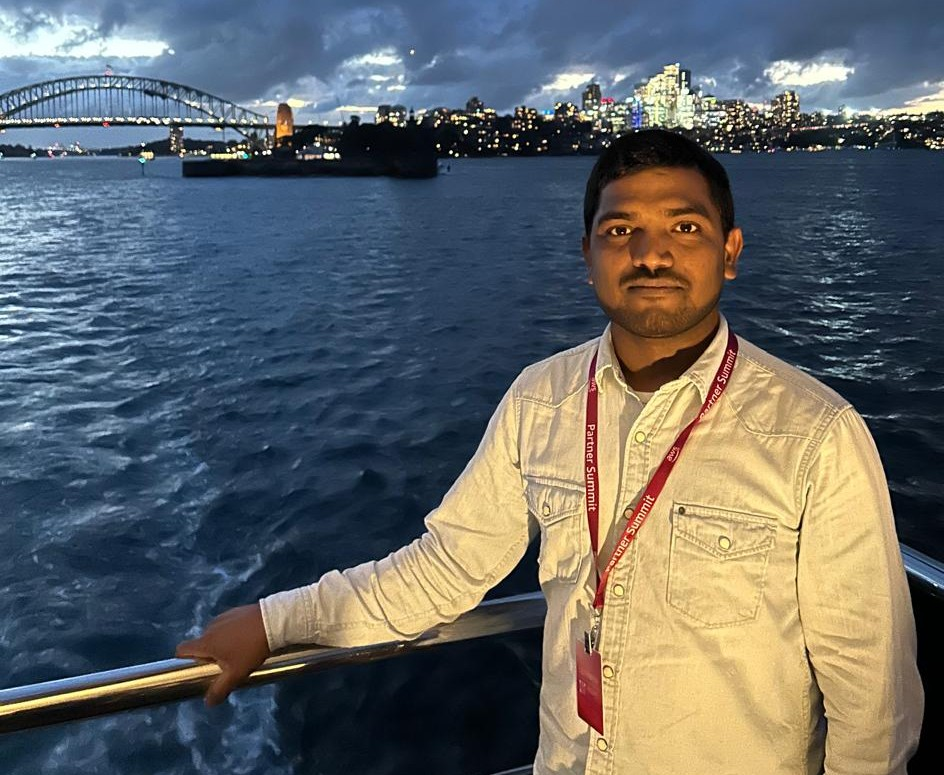

Cloud · networking · security
Building, Connecting, Securing Cloud Platforms, Data, and Infrastructure.
Cloud and infrastructure professional focused on AWS, Microsoft Azure, Apache Kafka, hybrid cloud, cloud networking, and cloud security.

Anand Killadi · SydneyExperience and capabilities
Areas of expertise
13+ years in IT
Cloud & infrastructure
Data & streaming
Apache Kafka, AWS MSK, and Confluent products.Hybrid infrastructure
Hybrid cloud, cloud networking, and on-premises environments.Containers & automation
Docker, Kubernetes, AWS ECS and ECR, Jenkins, Terraform, and CI/CD.Reliability & operations
SRE, high availability, monitoring, security, and performance optimization.Career history
Work experience
13+ years in IT
2011 — present
Aug 2026 — Present · 3 mos
Sydney, New South Wales, Australia · On-site
Senior Cloud Engineer
S@S · Full-time
Jul 2023 — Aug 2026 · 3 yrs 2 mos
Sydney, New South Wales, Australia · On-site
Senior Cloud Engineer
Colonial First State · Full-time
AWS, Microsoft Azure, cloud architecture and application migration, Apache Kafka with MSK and Confluent, Docker and Kubernetes (AWS EKS, ECS, and ECR), Confluent Schema Registries, and cloud security.
Dec 2015 — Aug 2026 · 10 yrs 9 mos
Bangalore
Technical Lead
Tata Consultancy Services · Full-time
Amazon Web Services, Microsoft Azure, cloud infrastructure, networking, security, Kafka, Docker, Kubernetes, and DevOps.
Feb 2020 — Jun 2023 · 3 yrs 5 mos
Sydney, New South Wales, Australia · On-site
Cloud DevOps Engineer
Commonwealth Bank · Full-time
Skills listed: Amazon Web Services (AWS) and Azure DevOps.
Jan 2011 — Nov 2015 · 4 yrs 11 mos
Bangalore
Application Engineer
Nihon Communications Solutions · Full-time
QualNet Network Simulator, wireless networks, academic research, IEEE publications, private cloud deployment, hypervisors, OpenStack, Citrix XenServer, AWS, network simulation and emulation, and networking tools.